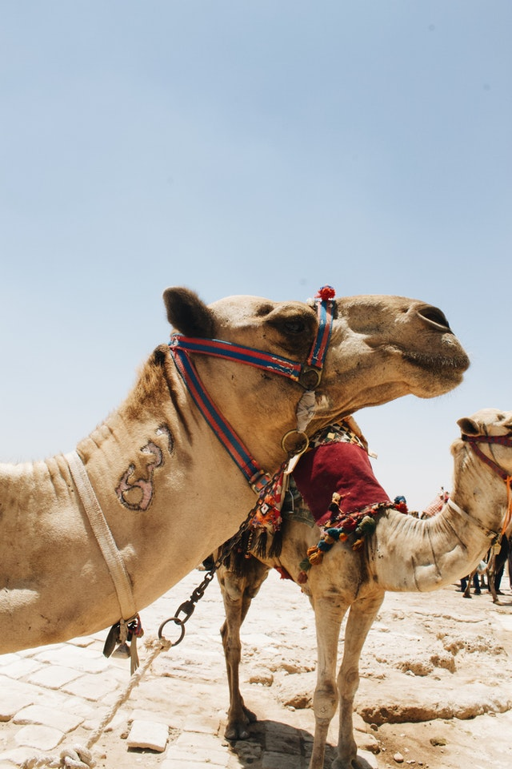
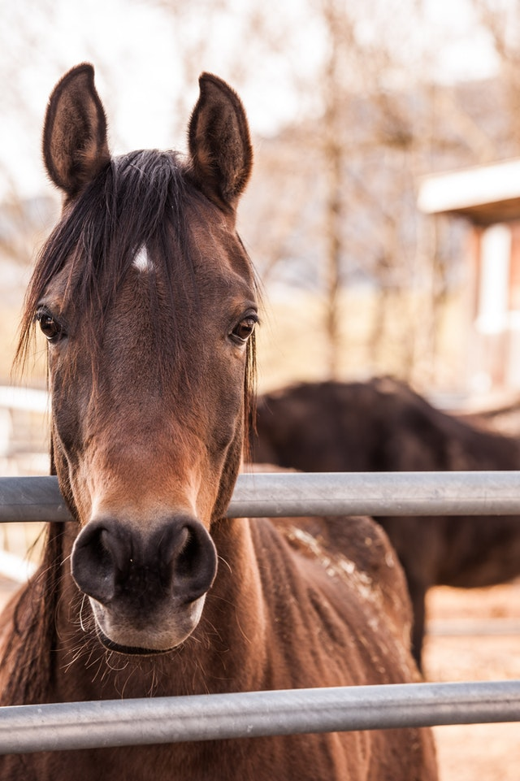
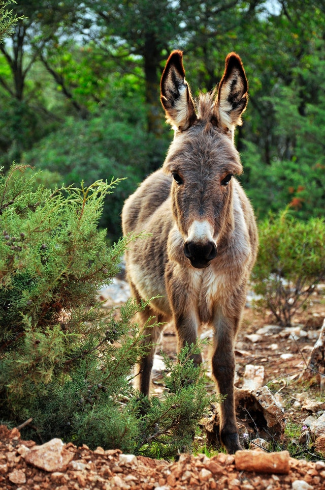
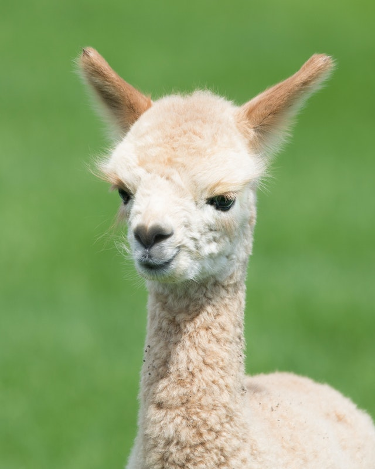
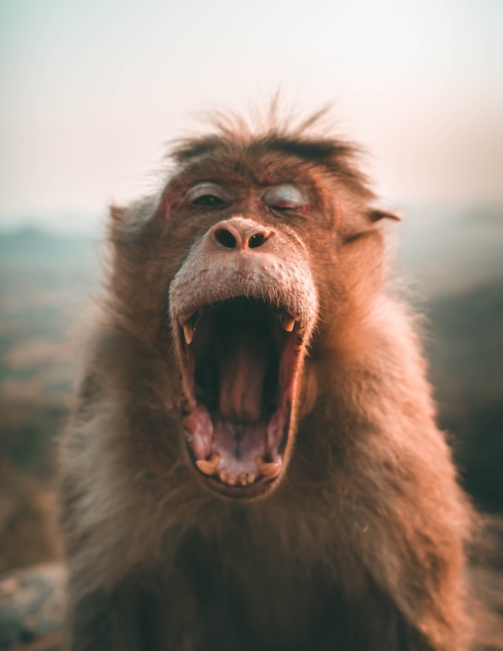
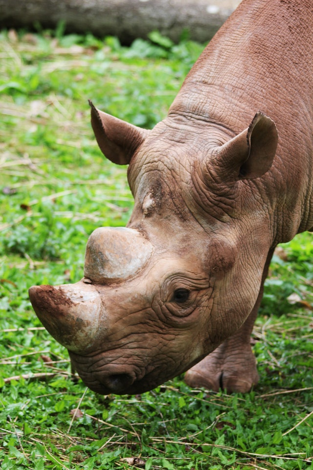
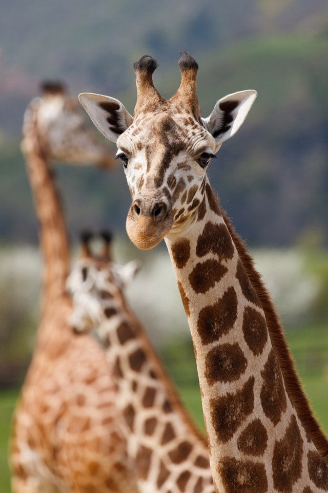

Cachorro
O cão é um mamífero com dentes afiados, excelente faro e boa audição. ... Paralelamente a essas características comuns, os cães têm diferentes tamanhos, formas e cores. Os cães que têm tamanho, aparência e comportamento parecidos fazem parte de um grupo chamado raça. Existem mais de quatrocentas raças de cães.
Camelo

Camelos são animais mamíferos pertencentes à família Camelidae e ao gênero Camelus. São animais de grande porte que podem passar longos períodos sem se alimentar e ingerir água. Contam com duas corcovas, que são reservas de gordura e os auxiliam na época de escassez de alimento.
Cavalo

Os cavalos são mamíferos quadrúpedes, do gênero Equus, que podem apresentar mais de 1,50 m de altura e pesar mais de 500 quilos. ... O cavalo é um animal mamífero da família Equidae e do gênero Equus. No gênero Equus, além do cavalo, encontramos o asno e a zebra.
Gato

O gato (felis catus) é um mamífero carnívoro e quadrúpede pertencente à família Felidae e à ordem carnívora. É um animal doméstico apreciado por caçar ratos e ratazanas. Este animal possui unhas retráteis, ouvidos e olfação bem aguçados, uma notável visão noturna e um corpo flexível, musculoso e compacto.
Jumento

O jumento é um animal dócil, inteligente e dotado de grande senso de sobrevivência. É muito usado como animal de carga, tração e é peça fundamental nos trabalhos pesados do campo. O jumento é um animal dócil, inteligente e dotado de grande senso de sobrevivência.
Lhama

A lhama ou o lama (Lama glama), do quíchua llama, é um mamífero ruminante da América do Sul, da família dos camelídeos, género Lama. É um animal de pelagem longa e lanosa, domesticado para a utilização no transporte de carga e na produção de lã, carne e couro. A lhama é relacionada com o guanaco, a vicunha e a alpaca.
Macaco

Os macacos são animais inteligentes e sociáveis. São conhecidos por correr e saltar pelas árvores com facilidade. A exemplo dos antropoides (como são chamados os macacos sem rabo) e dos seres humanos, os macacos pertencem ao grupo de mamíferos chamados primatas. Um macaco da espécie Colobus guereza.
Rinoceronte

Rinoceronte, nome comum dado a certas espécies de ungulados de dedos ímpares, cuja característica mais notável é a presença de um ou dois chifres, que na verdade são excrescências da pele. São animais grandes, pesados, de corpo robusto e patas curtas. ... A pele é grossa, de cor cinza ou castanha, segundo a espécie.
Girafa

A girafa é um vertebrado de grande estatura. O macho, geralmente maior que a fêmea, pode chegar a cerca de 5,3 m de altura e a pesar em torno de 1.200 kg; já a fêmea pode alcançar a estatura de cerca de 4,3 m e chegar a pesar 830 kg. A longevidade desse animal é de cerca de 25 anos.